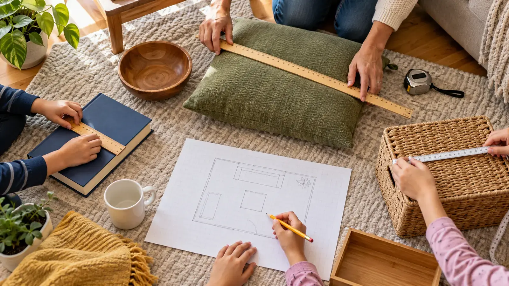

Small: pencil or book
Estimate and measure one straight length in centimeters. Start the object at zero, not at the physical end of a damaged ruler.
AT HOME · NO-SPEND MATH · EXPLORATION
Guess first. Measure second. Draw only what you verified. The lesson is not being right—it is learning how a number becomes evidence.

This is a measurement game, not a renovation plan. The child estimates six safe objects, measures each one in centimeters, calculates or describes the difference, then draws a simple room outline using only verified numbers. Nobody climbs, measures a person, opens an electrical panel or decides whether furniture will structurally fit.
NIST’s Metric Estimation Game treats estimation as a skill built by comparing a reasoned estimate with a measured value. That is the useful family version too. The win is not guessing perfectly. The win is choosing a unit, placing the zero correctly, keeping the tool straight and recording what happened. Families who enjoy build-and-test work can continue with the paper bridge load test or cardboard marble maze.
Use two sheets of scrap paper, pencils, a ruler with clear centimeter marks, and either a meter stick or soft cloth tape. A retractable metal tape can pinch, cut or snap back; the adult controls it if used at all. Clear a floor area, move hot drinks and breakables, and keep younger children away from small tools.
Choose six ordinary objects that can stay where they are: a pencil, book, storage box, cushion, low table and one clear wall segment. Avoid windows, doors that can swing, appliances, stairs, pets, people, medicine, weapons, valuable artwork and anything carrying private information. The activity does not need a whole-house tour.
| Object and direction | Estimate (cm) | Measured (cm) | Difference (cm) | Tool |
|---|---|---|---|---|
| Book length | ___ | ___ | ___ | Ruler |
| Box width | ___ | ___ | ___ | Ruler/tape |
| Cushion length | ___ | ___ | ___ | Meter stick |
| Table length | ___ | ___ | ___ | Meter stick |
| Rug width | ___ | ___ | ___ | Adult-managed |
| Clear wall length | ___ | ___ | ___ | Adult-managed |
Three mistakes create most of the useful conversation. First, the object may begin at the wooden end of a ruler instead of the zero mark. Second, the tool may bend or angle across the object. Third, the number may be recorded without centimeters or with inches mixed into the same column. Fix the process, not the child.
If a ruler’s end is damaged, begin at a known mark such as 1 cm and subtract that starting value. If the object curves, decide whether the lesson is straight-line length or following the curve; those are different measurements. If two people disagree, measure again from the same points with the same tool.
An estimate is a prediction, not a secret test. Ask, “What known length did you compare it with?” A child may know a common ruler is about 30 cm or a meter stick is 100 cm. Keep the original estimate visible and celebrate a sensible method even when the number is far away.
For older children, calculate absolute error: measured value minus estimate, ignoring the sign. For a harder extension, compare the difference with the measured value. Do not turn a 25-minute family activity into a grade or sibling ranking. NIST’s classroom game uses points, but the home version can stay cooperative.
The final drawing teaches how measurements connect to a spatial record. It is not a survey, appraisal sketch, architectural drawing, accessibility plan, emergency-egress diagram or proof furniture will fit through a door. Do not use it to order cabinets, verify building area, resolve a boundary or authorize work.
Label the page “simple sketch—not to scale,” date it, and include only the measured features. A doorway can be a gap in the line without dimensions. Children do not need to draw bedrooms, security devices or anything the family considers private. If the activity is photographed, crop out names, addresses, calendars and valuables.
No ladders, chairs, counters or stairs. Do not measure ceiling height, window openings, exterior walls near traffic, electrical equipment, hot surfaces or a moving door. Keep long tapes away from necks and bodies. Do not let a metal tape snap back. The adult retrieves a dropped tool near furniture, glass or appliances.
Stop for arguing over the tool, unsafe movement, a younger child wrapping tape around a body part, or a pet entering the work zone. Reset with one book and one ruler. The home fire-escape drill is the correct separate activity for exits; this page does not replace it.
Low energy: estimate and measure three books, then sort from shortest to longest. Younger child: compare longer/shorter with a rigid ruler while the adult reads the number. Math frustration: skip subtraction and circle the closest estimate. No metric tool: use inches consistently and discuss why the unit still must be written. Limited floor access: measure tabletop objects only. Conflict: use one shared estimate and let roles rotate.
Skip the long-measure version when the room is crowded, someone cannot move safely around objects, or the only available tool is damaged. Adapt for vision, motor or reading needs with high-contrast marks, tactile guidance from a qualified adult, spoken recording, larger objects or fewer steps. Families do not need to expose private home information to teach measurement.
Use the drawing to ask one evidence question: which object would fit along the measured wall, and what extra information would be needed before acting? That distinction—what we know versus what we still need—is the real lesson. The family claim check uses the same habit with sources instead of rulers, while the shadow lab turns measurement into a controlled experiment.
Reviewed October 28, 2026 using the National Institute of Standards and Technology’s Metric Estimation Game and NIST linear-measurement activities that pair estimation with verified measurement. The six-object card, 25-minute sequence, privacy boundaries and simple-sketch disclaimer are original editorial tools. This is not construction, surveying, appraisal, code or engineering guidance. No affiliate links are attached. Report corrections through About.
MAKE THE WEEK COUNT
Build the plan your family can finish well, then leave enough energy for the next part of the day.
More family plans